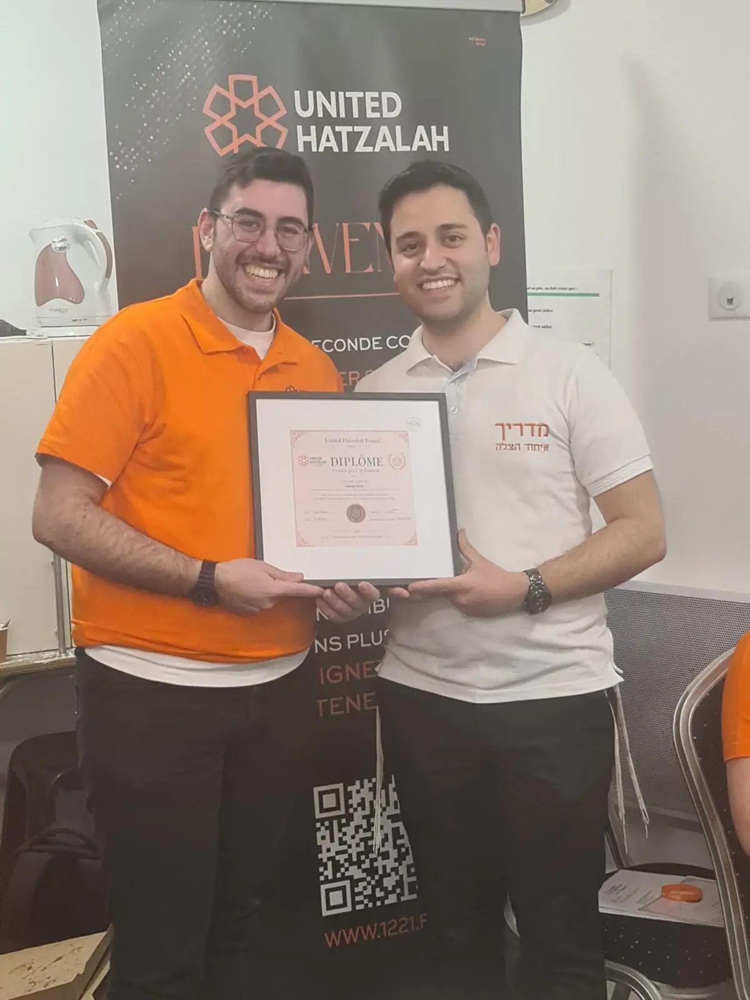
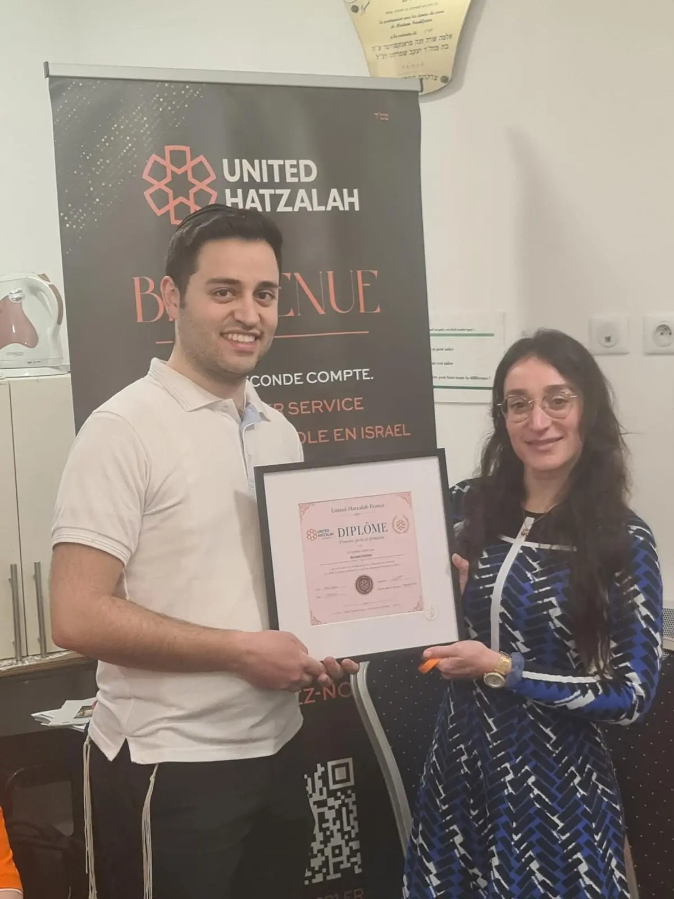
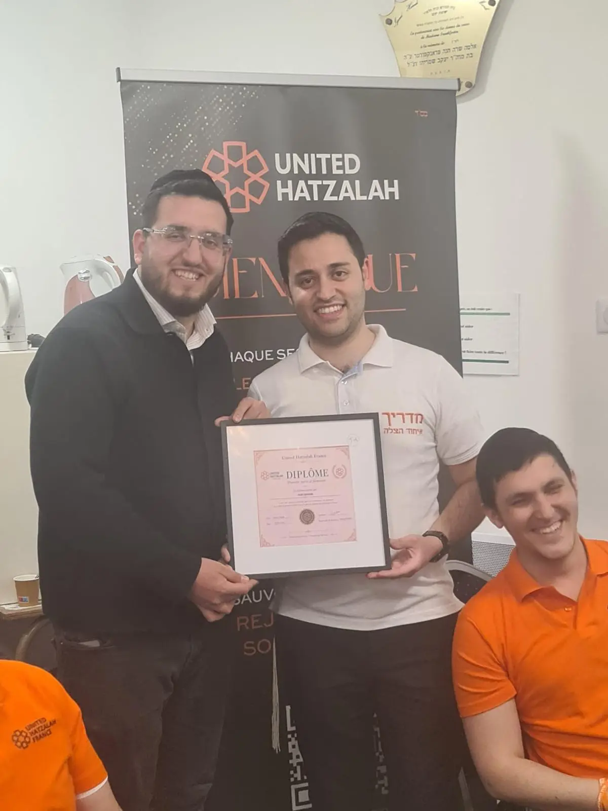
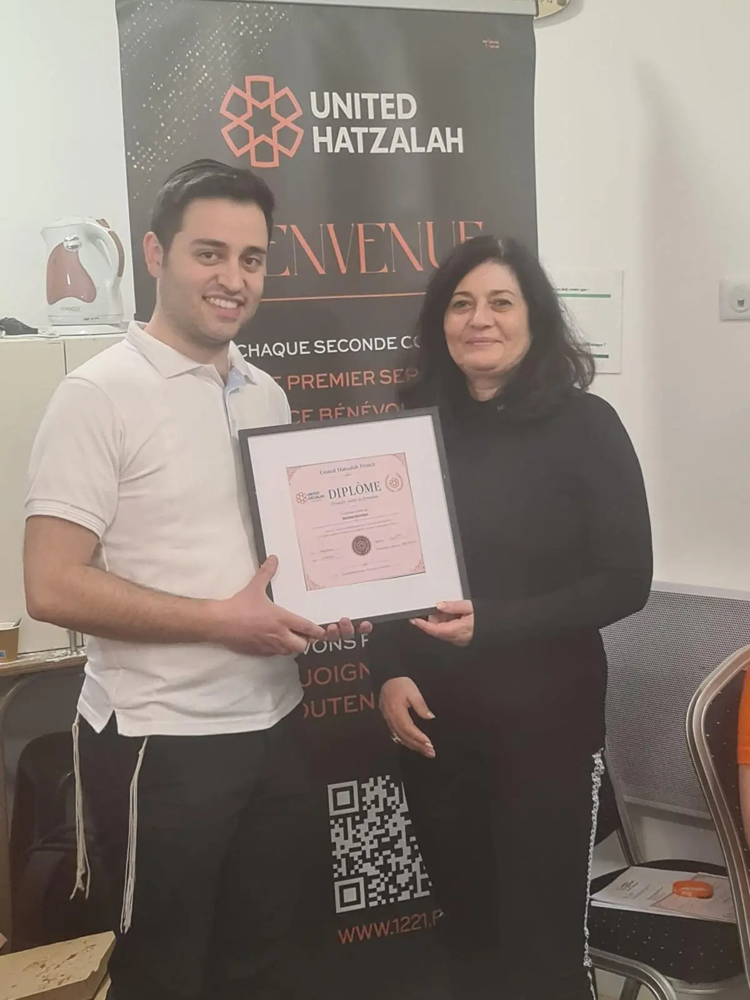

Une première promotion qui prend forme
La formation de secouristes bénévoles constitue l’un des grands chantiers de United Hatzalah France. Le 12 mai 2026, une cérémonie de remise de diplômes a marqué une première étape de ce parcours collectif.
Au-delà du document remis à chacun, ce moment symbolise des heures d’apprentissage, de pratique et d’engagement au service des autres. Les bénévoles ont pu partager cette réussite avec les équipes qui accompagnent leur formation.
Se préparer avant d’intervenir
Les gestes de premiers secours s’apprennent, se répètent et s’entretiennent. Le projet français s’appuie sur un programme progressif, qui associe des enseignements théoriques et une mise en pratique régulière. Cette remise de diplômes marque une étape du parcours : elle ne remplace ni les qualifications réglementaires requises pour certaines missions ni la formation continue.
La cérémonie en images





La suite de l'engagement
Cette première promotion a ouvert la voie à la poursuite de la formation et à la mobilisation de bénévoles lors d’événements communautaires en France. La préparation des équipes et le suivi des compétences restent au cœur de cette dynamique.